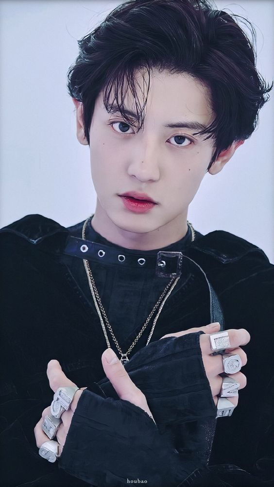

Regresar
¿Qué es el k-pop? |
||||
|  CHANYEOL, EXO SUGA, BTS |
Según nuestra fuente maestra de conocimiento (Wikipedia), esta es la definición de K-pop: K-pop (abreviación de Korean popular music, en inglés o música popular coreana en español), es un género musical que incluye diversos estilos como la música dance electrónica, hip hop, rap, rock o R&B, y que se refiere específicamente a la música popular de Corea del Sur, debido a que Corea del Norte no posee una industria de música popular con influencia occidental. Aún con esto, una definción más concreta y menos ostentosa, dice que el k-pop es, según El Instituto Nacional de Audiovisual francés, simplemente una: «fusión de música sintetizada, rutinas de baile y ropa colorida de moda».
Aclaradas las características, procedo a adjuntar una lista de los grupos de k-pop más populares del 2019
|
Taehyung, BTS |
||
|
BTS es uno de los grupos de K-pop más famosos de la actualidad |
||||
|
Regresar |